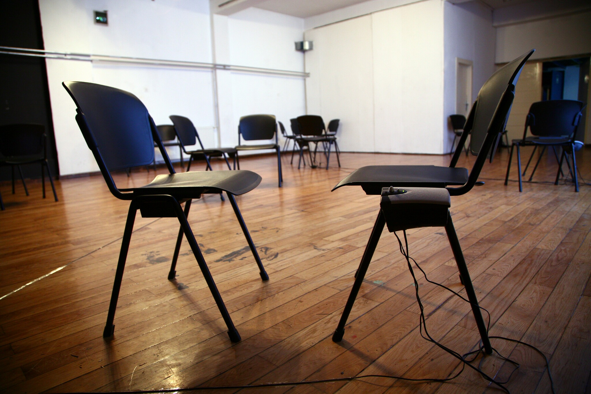

The Love Piece collaboration w/ Ana Achimovicz, Nino Bokan, Pravdan Devlahović, Oliver Frljić, Zvonimir Kvesić, Ivana Pavlović, Ivana Roncević, Nina Sakić, Una Vizek2007 
photo Damir Žižić The Love Piece is an invitation to experience the performance as an affective encounter, and vice-versa, the encounter as a performative experience. Deciding that the focus of performance is "giving love" says a lot about our desires for theatre; theatre as a social place, performance as a moment of encounter and change, performance as the production of a reality that could either be understood as real or fictional, but in any case that happens. Tension and dramaturgy are produced through the attempt to stay within this situation for a certain period of time and to deal with our affective production. The love piece unfolds along a loose score that can be described as: there are as many audience members as performers. As they come in, audience members are each taken by the hand by a performer, who for the duration of the show (about 30 minutes) "give love" to his/her audience. What such a love can be, is the stake of the piece. Love songs are playing the whole time.Read a longer text about the piece here Credits Concept & Performance Alice Chauchat, Ana Achimovicz, Nino Bokan, Pravdan Devlahović, Oliver Frljić, Zvonimir Kvesić, Ivana Pavlović, Ivana Roncević, Nina Sakić, Una Vizek Production Eksperimentalna slobodna scena Co-production Student Center –Culture of Change, Zagreb With support from French Institute in Zagreb, Goethe Institute in Zagreb, Zagreb City Council, Ministry of Culture of Republic of Croatia, Ministry of Foreign Affairs of Republic of Germany and Ministry of Foreign Affairs of Republic of France Production Eksperimentalna slobodna scena TRIATLON (2005– 2007) was a three-year collaborative project in the field of contemporary dance and theatre of movement in which Croatia, France and Germany are participating. It was conceived as an intensive cultural and artistic cooperation between Croatian dance and theatre organizations and invited French and German dance artists and theoreticians in the frame of workshop exchange of dance knowledge and expertise until the final work on the process of future dance and theatre productions of invited authors and Croatian dance and performing artists. For the link to a video of audience members telling the piece, please contact me directly
|